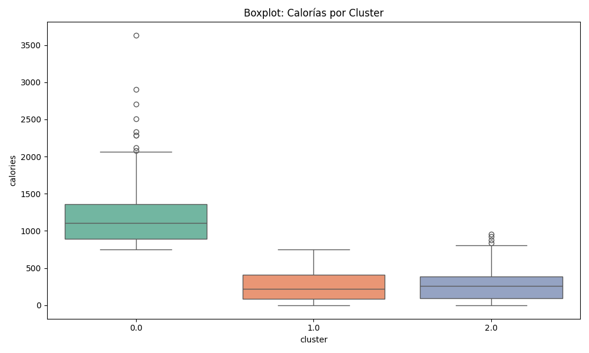
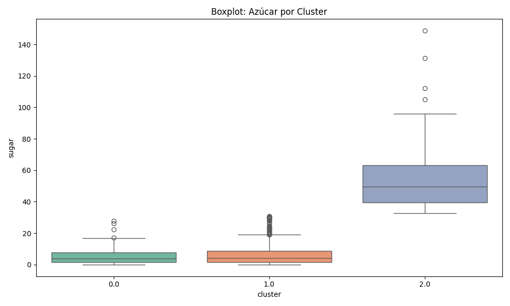
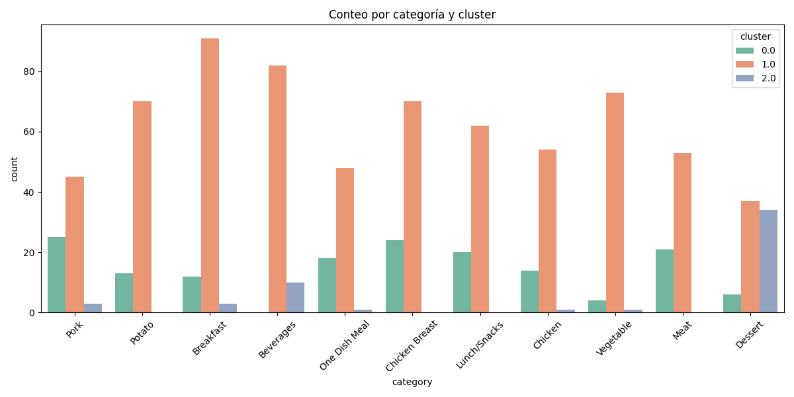
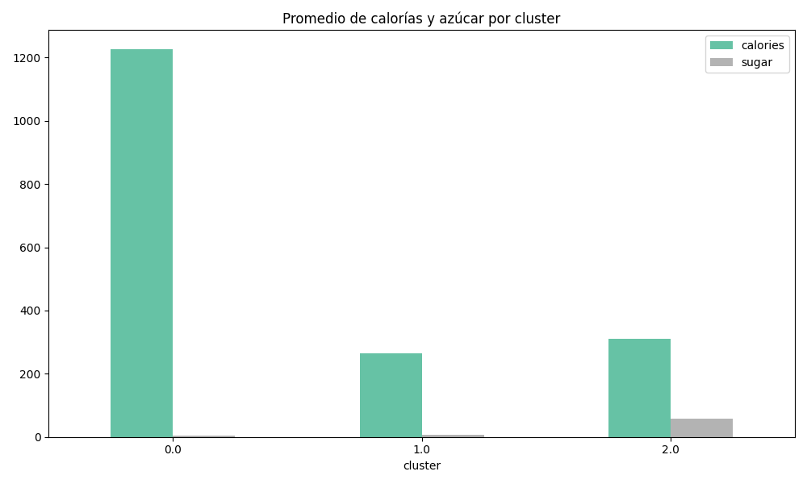
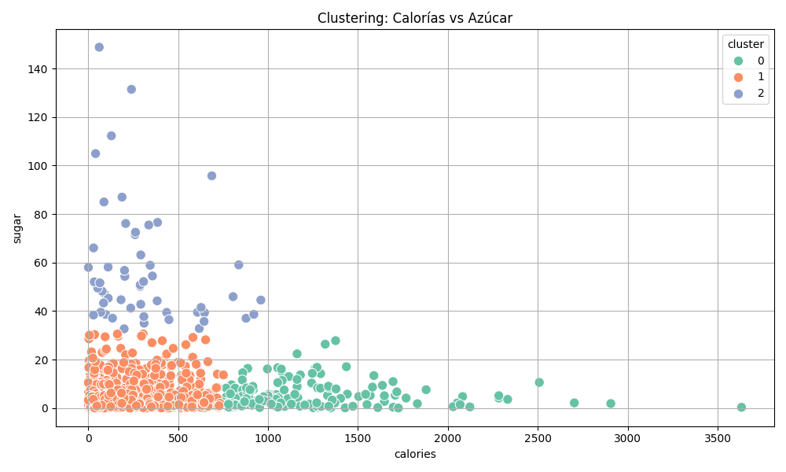

Modelo de Clustering con visualización y análisis de resultados
Se implementó un modelo de clustering no supervisado usando el algoritmo KMeans para segmentar las recetas del conjunto de datos recipe_site_traffic_2212_clustered.csv. Se analizaron las variables calories y sugar y se exploraron los grupos generados a través de diferentes visualizaciones.
calories y sugar).KMeans(n_clusters=3) con ajuste de parámetros para segmentar los datos en tres grupos.cluster al dataframe con la clasificación resultante.Se puede observar que el cluster 0 concentra recetas con calorías elevadas, mientras que el cluster 1 y el cluster 2 agrupan recetas más bajas en calorías.
El cluster 2 destaca por tener recetas con alto contenido de azúcar, en contraste con los clusters 0 y 1.
Este gráfico permite ver la distribución de las categorías alimenticias en cada cluster. Por ejemplo, el cluster 1 tiene la mayor diversidad.
El promedio de calorías es más alto en el cluster 0 y el promedio de azúcar en el cluster 2, indicando distintos perfiles nutricionales.
Este scatterplot muestra cómo están distribuidos los clusters en el espacio de dos dimensiones. Se observan agrupaciones claras y valores atípicos.
Esta práctica permitió aplicar técnicas de análisis exploratorio y clustering para entender cómo se pueden agrupar datos no etiquetados según sus características. Se destacó la utilidad de las visualizaciones para interpretar los patrones en los datos y entender las diferencias nutricionales entre los clusters.
El siguiente bloque incluye el código fuente completo del experimento.
import pandas as pd
import matplotlib.pyplot as plt
import seaborn as sns
from sklearn.cluster import KMeans
# CARGA DE DATOS
df = pd.read_csv("recipe_site_traffic_2212_clustered.csv")
df.dropna(subset=["calories", "sugar"], inplace=True)
# CLUSTERING
X = df[["calories", "sugar"]]
kmeans = KMeans(n_clusters=3, random_state=42)
df["cluster"] = kmeans.fit_predict(X)
# VISUALIZACIONES
# (Gráficas generadas en el código de análisis)